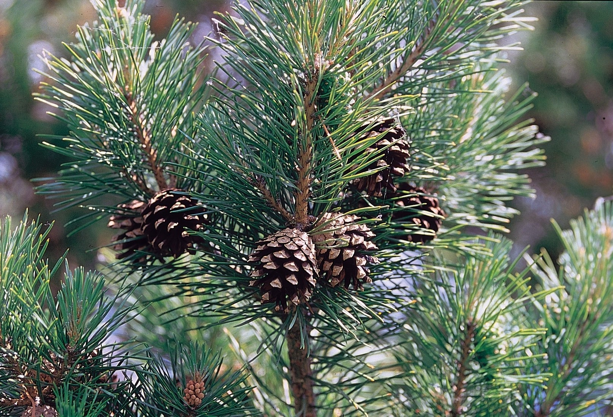
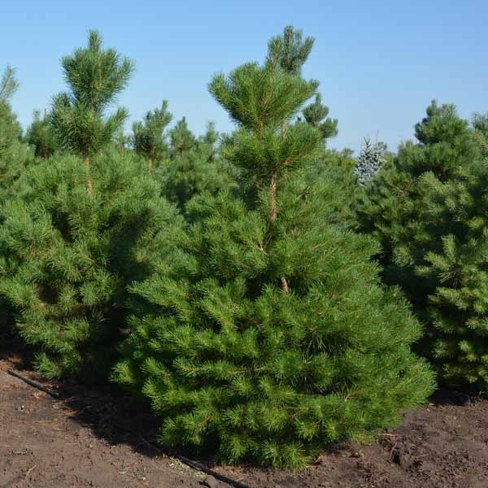

 Сосна звичайна – одне з найпоширеніших хвойних дерев у помірному кліматі Євразії, яке утворює величезні масиви соснових лісів. Вона вічнозелена, тому створює мальовничий пейзаж у будь-яку пору року, додаючи зелених барв навіть узимку. Сосна росте переважно на піщаних ґрунтах, у сухих борах та на узліссях, але легко пристосовується й до інших умов. Її коренева система добре розвинута, що дозволяє дереву укріплювати ґрунти та запобігати ерозії. Завдяки густій кроні сосна очищає повітря та насичує його фітонцидами, створюючи сприятливий мікроклімат для людини та тварин. У таких лісах приємно відпочивати, а повітря вважається цілющим для органів дихання. Соснові насадження відіграють величезну роль у підтриманні екологічного балансу, збереженні біорізноманіття й регулюванні клімату.
Сосна звичайна має високий прямий стовбур, який може досягати 30–40 метрів заввишки, а окремі екземпляри навіть перевищують ці показники. Її кора в молодому віці сірувато-зелена, згодом набуває рудувато-бурого кольору й розтріскується на пластини. Довгі вузькі хвоїнки зібрані попарно й утримуються на гілках до трьох років, поступово змінюючись на нові. Це дерево світлолюбне й морозостійке, тому легко приживається в різних кліматичних зонах і часто використовується для лісорозведення. Крона сосни формується залежно від умов зростання: у густому лісі вона вузька й висока, а на відкритому просторі – широка та розлога, з численними бічними гілками. Сосна починає плодоносити шишками у віці 10–15 років, а в сприятливих умовах живе до 300–400 років. Такі характеристики роблять сосну однією з найстійкіших і найкорисніших лісоутворювальних порід.
 Сосна звичайна має велике господарське, екологічне й культурне значення для людини. Її деревина легка, міцна та смолиста, тому широко використовується в будівництві, виробництві меблів, паперу, деревостружкових плит та інших матеріалів. Смола, бруньки й хвоя сосни застосовуються у фармацевтиці, косметології та народній медицині для виготовлення настоянок, сиропів, мазей і ефірних олій із протизапальними та антисептичними властивостями. Крім того, сосна є важливим декоративним видом: її висаджують у парках, скверах, на алеях та присадибних ділянках для створення тіні, очищення повітря й озеленення територій. У багатьох культурах сосна символізує силу, витривалість, довголіття й оновлення, а її шишки та гілки традиційно використовуються у святковому оздобленні. Завдяки своїм властивостям сосна звичайна залишається незамінною як у природних, так і в штучних насадженнях, поєднуючи практичну користь і природну красу. Усе це робить її справжньою окрасою лісів і надійним союзником людини у збереженні довкілля.
Вгору